CS184/284A Spring 2025 Homework 3 Write-Up
OVERVIEW — 3 pts
In this assignment, I built a full path tracer from the ground up by implementing
different components across each part that gradually improved both realism and
efficiency. In Part 1, I implemented the basic ray tracing pipeline, including
generating camera rays for each pixel and computing ray-scene intersections. To
make this efficient, I used a BVH acceleration structure, which significantly
reduces the number of intersection tests needed and makes rendering complex
scenes feasible. This part established the core structure of the renderer and
allowed me to correctly determine visible surfaces in the scene.
In Part 2 and Part 3, I focused on direct illumination. I implemented two different
sampling strategies: uniform hemisphere sampling and light importance sampling.
Uniform hemisphere sampling randomly samples directions over the hemisphere, which
works but introduces a lot of noise since many samples do not contribute meaningful
light. In contrast, importance sampling directly samples directions toward light
sources, which greatly improves efficiency and reduces noise. Comparing these two
approaches helped me understand how critical good sampling strategies are in
rendering.
In Part 4, I extended the renderer to support global illumination by adding indirect
lighting through recursive ray tracing. I implemented diffuse BSDF sampling to
simulate how light reflects off surfaces in different directions, allowing light to
bounce multiple times throughout the scene. This made it possible to capture more
realistic effects such as soft shadows and color bleeding between surfaces. I also
implemented Russian Roulette to probabilistically terminate rays, which improves
performance while keeping the estimator unbiased. This part was especially
interesting because it showed how multiple light bounces significantly enhance
realism compared to direct lighting alone.
In Part 5, I implemented adaptive sampling to improve rendering efficiency. Instead
of using a fixed number of samples per pixel, I tracked the variance of samples and
used a confidence interval to determine whether a pixel had converged. Pixels that
converge quickly stop early, while more complex or noisy regions continue to receive
more samples. This reduces unnecessary computation while maintaining image quality.
Overall, this assignment gave me a deeper understanding of how physically-based
rendering works. I found it especially interesting how indirect lighting and sampling
strategies dramatically affect the final image quality, and how techniques like BVHs
and adaptive sampling are essential for making rendering both accurate and efficient.
PART 1 — 20 pts
Ray Generation and Primitive Intersection
Walk through the ray generation and primitive intersection parts of the rendering pipeline.
-
The rendering process starts by shooting rays from the camera through each pixel in
the image. For each pixel, I convert its position into normalized coordinates between
0 and 1, then map that onto the camera's image plane using the field of view. This
gives me a direction in 3D space, and I create a ray starting from the camera position
going in that direction. I then transform this ray from camera space into world space
using the camera-to-world matrix.
-
After generating the ray, I check if it hits anything in the scene. The ray is tested
against all objects, like triangles and spheres, to find intersections. If the ray hits
something, I keep track of the closest intersection by updating the ray's max distance
(max_t). This ensures that only the nearest object is considered, and anything farther
away is ignored. The result is the closest surface that the ray hits, which is then used
for shading.
Explain the triangle intersection algorithm you implemented in your own words.
-
For triangle intersections, I used the Möller–Trumbore algorithm. The idea is to solve
for where the ray intersects the triangle using barycentric coordinates. These coordinates
tell us whether the intersection point lies inside the triangle or not.
-
First, I compute the intersection between the ray and the plane of the triangle. Then, I
calculate the barycentric coordinates to check if the point is actually inside the triangle.
If the coordinates are valid (non-negative and sum to less than or equal to 1), and the
intersection is within the valid ray range, then the ray hits the triangle. I also update
the ray's
max_t so that only the closest intersection is kept.
-
To get smooth shading, I interpolate the triangle's vertex normals using the barycentric
coordinates. This gives a smooth transition of normals across the surface instead of a
flat look.
Normal shading for small .dae files
The images below show the results using normal shading after implementing ray generation
and intersection. The CBempty scene shows only triangle intersections, while the CBspheres
scene includes both triangles and spheres. The colors represent surface normals, which helps
confirm that intersections are working correctly. The smooth color changes across surfaces
show that normal interpolation is working as expected.
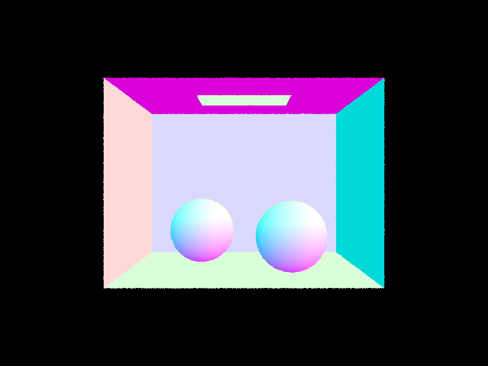
CBempty — normal shading
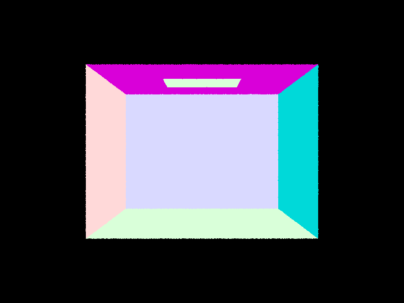
CBspheres — normal shading
PART 2 — 17 pts
Bounding Volume Hierarchy (BVH)
Walk through your BVH construction algorithm and the heuristic you chose for picking the splitting point.
-
To build my BVH, I first computed a bounding box that contains all primitives in the
current range. If the number of primitives was small enough (less than or equal to the
max leaf size), I made that node a leaf and stored the primitives there. Otherwise, I
computed a bounding box over the centroids of the primitives and chose the axis with the
largest spread, since that is usually the best direction to split the scene.
-
After choosing the axis, I split the primitives based on whether their centroid was on
the left or right side of the midpoint along that axis. I then recursively built the left
and right child nodes. If the partition ever failed and all primitives ended up on one
side, I fell back to splitting the range in half to avoid infinite recursion. This gave me
a simple recursive BVH that was much faster than checking every primitive one by one.
Normal shading for large .dae files (BVH acceleration required)
I used cow.dae and maxplanck.dae for my normal-shaded renders, since these are
both much more complex scenes than the smaller test scenes from Part 1. These scenes are
good examples of cases where BVH acceleration makes a big difference, because they contain
many more triangles and would be much slower to render by testing every ray against every
primitive directly.
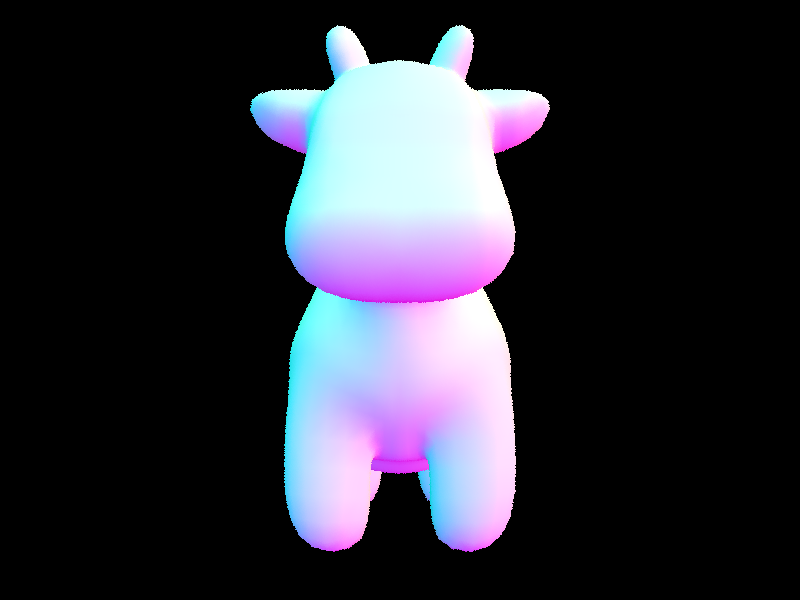
cow.dae — normal shading
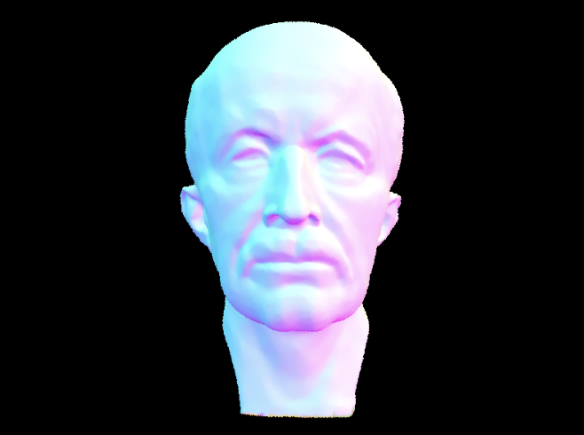
maxplanck.dae — normal shading
Rendering time comparison: with and without BVH acceleration
-
I compared rendering times for scenes with and without BVH acceleration. Without BVH,
rendering was significantly slower because each ray had to test against every primitive
in the scene. After enabling BVH, rendering became much faster since large groups of
primitives could be skipped using bounding boxes.
-
For example, the cow.dae scene took around 42.3 seconds without BVH but only 0.21 seconds
with BVH. Similarly, maxplanck.dae decreased from about 135.8 seconds to 0.57
seconds. This demonstrates that BVH greatly improves performance, especially for scenes
with many triangles.
-
Overall, BVH reduces the number of intersection tests and makes rendering much more
efficient, effectively improving performance from linear to near-logarithmic behavior
in practice.
PART 3 — 20 pts
Direct Lighting
Walk through both implementations of the direct lighting function.
-
For uniform hemisphere sampling, the idea is to estimate incoming light by randomly
sampling directions over the hemisphere above the surface. At each intersection point,
I generate random directions in the hemisphere (in local space), transform them to world
space, and shoot a shadow ray in that direction. If the ray hits a light source, I take
the emitted light and weight it using the BSDF, cosine term, and the sampling PDF. I then
average over all samples. This method is simple but inefficient because most sampled
directions do not actually point toward lights, which leads to a lot of noise.
-
For importance sampling, instead of sampling random directions, I directly sample
directions toward the light sources. For each light in the scene, I sample a direction
from the hit point to the light using
sample_L, and cast a shadow ray to
check if the light is visible (not blocked). If it is, I compute the contribution using
the BSDF, cosine term, and PDF, and accumulate it. This approach is much more efficient
because it focuses computation only on directions that actually contribute light.
Images rendered with both direct lighting implementations
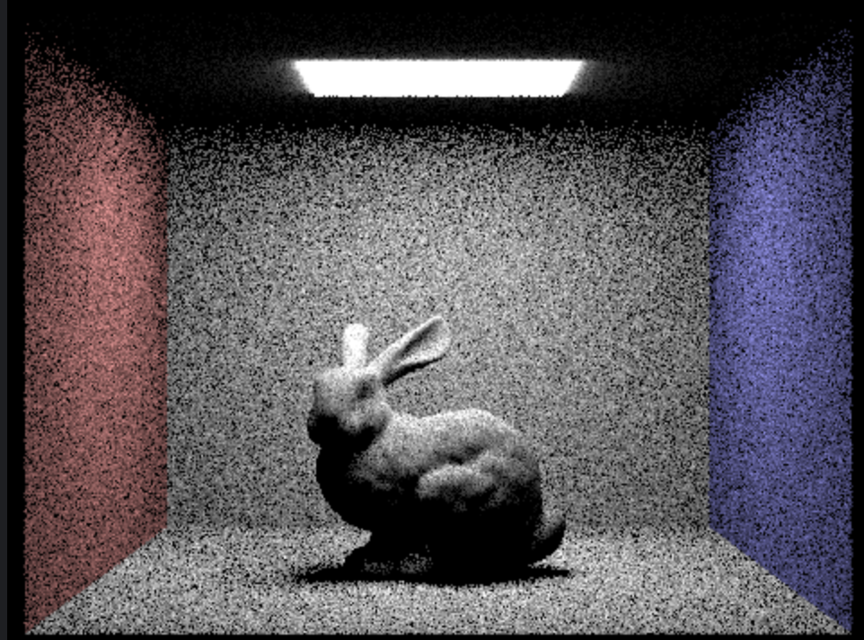
Uniform hemisphere sampling — very noisy
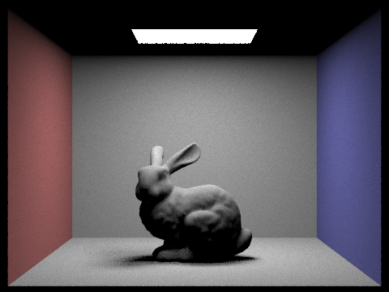
Importance sampling — much smoother
Noise levels with 1, 4, 16, and 64 light rays (importance sampling, 1 sample/pixel)
As the number of light samples (-l) increases, the noise in the soft shadows decreases
significantly. With only 1 light sample, the image is extremely noisy because each pixel
gets very limited information about the lighting. At 4 samples, the noise is still visible
but starts to improve. At 16 samples, the image becomes noticeably smoother, and at 64
samples, the shadows are much cleaner and more stable. This happens because increasing the
number of samples reduces variance in the Monte Carlo estimate, leading to more accurate
and consistent lighting results.
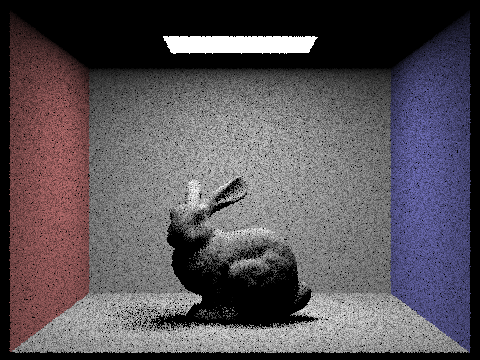
4 light rays
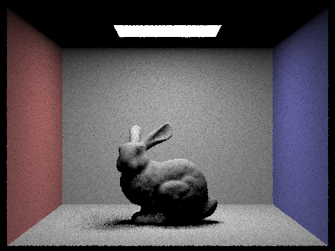
16 light rays
Uniform hemisphere sampling vs. importance sampling — comparison
Uniform hemisphere sampling produces very noisy results because it samples directions
randomly across the entire hemisphere, meaning most rays do not hit light sources and
contribute little useful information. This makes convergence slow and inefficient. In
contrast, importance sampling directly targets light sources, so almost every sample
contributes meaningful lighting information. As a result, importance sampling produces
much smoother images with significantly less noise, especially in soft shadow regions.
Overall, importance sampling is far more efficient and practical for rendering direct
illumination compared to uniform hemisphere sampling.
PART 4 — 25 pts
Global Illumination (Indirect Lighting)
Walk through your implementation of the indirect lighting function.
-
For indirect lighting, I implemented the function
at_least_one_bounce_radiance,
which recursively traces rays to simulate light bouncing around the scene. First, I compute
the direct lighting using one_bounce_radiance and add it to the result if we
are accumulating bounces. Then, I sample a new incoming direction w_in using the BSDF's
sample_f function, which gives both the direction and its probability density
(pdf). This sampled direction is converted to world space and used to spawn a new ray
starting slightly offset from the surface (to avoid self-intersections).
-
If this new ray hits another object, I recursively call
at_least_one_bounce_radiance
to estimate incoming light from further bounces. The contribution is scaled by the BSDF
value, cosine term, and divided by the pdf, following the rendering equation. I also
implemented Russian Roulette termination with a continuation probability (e.g., 0.65) to
probabilistically stop recursion while keeping the estimator unbiased. If
isAccumBounces is true, I accumulate all bounce contributions; otherwise, I
return only the current bounce contribution.
Global illumination renders (1024 samples/pixel)
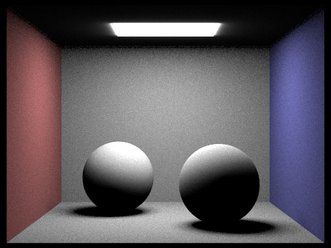
CBspheres — global illumination

CBbunny — global illumination
I rendered scenes such as CBspheres and CBbunny using 1024 samples per pixel with both
direct and indirect illumination enabled. These images show realistic soft shadows and
noticeable color bleeding between surfaces. For example, the red and blue walls subtly tint
nearby objects, which is a clear effect of indirect lighting. Compared to direct-only
rendering, the scenes appear much more evenly lit and physically realistic.
Direct vs. indirect illumination only (CBbunny, 1024 samples/pixel)
-
Direct-only lighting: The bunny is lit primarily from the light source
above, producing sharp shadows and strong contrast. Areas not directly visible to the
light appear very dark.
-
Indirect-only lighting: The scene appears dimmer overall, but surfaces
are softly illuminated due to light bouncing from walls and other objects. The bunny still
receives light, but without sharp highlights or direct shadows.
This comparison highlights how indirect lighting fills in dark regions and adds realism by
simulating global light transport, while direct lighting alone produces harsher and less
realistic results.
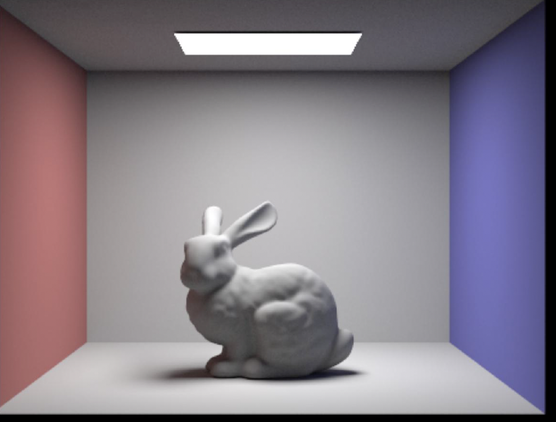
Indirect illumination only
mth bounce of light — CBbunny.dae (unaccumulated, isAccumBounces=false, 1024 spp)
-
In my renders, the 2nd bounce introduces noticeable indirect lighting, where light
reflects off surfaces like the walls and floor and illuminates areas that are not directly
lit. This helps soften shadows and adds more realistic shading to the scene.
-
However, the 3rd bounce looks very similar to the 2nd bounce in my results. This is
expected because each additional bounce contributes less light due to energy loss at every
reflection. As a result, higher-order bounces (like the 3rd bounce and beyond) have a much
smaller visual impact and are harder to distinguish.
-
Even though the difference between the 2nd and 3rd bounce is subtle, these additional
bounces still contribute to overall realism by slightly improving global illumination
effects. Compared to rasterization, which only accounts for direct lighting, these extra
bounces help simulate light transport more accurately, resulting in softer shadows and more
natural lighting.
Accumulated vs. unaccumulated bounces — CBbunny.dae (1024 spp)
-
With accumulated bounces (isAccumBounces = true), each increase in max
ray depth adds more light contribution, making the image brighter and more realistic. The
scene gradually converges to a physically accurate solution with smooth lighting and color
bleeding.
-
With unaccumulated bounces (isAccumBounces = false), each image shows
only the contribution from a single bounce level. These images appear incomplete and often
very dark, but they are useful for visualizing how each bounce contributes individually.
For example, the second bounce clearly shows indirect illumination patterns without direct
lighting.
| max_ray_depth | accumulated | unaccumulated |
|---|
| 0 |
|
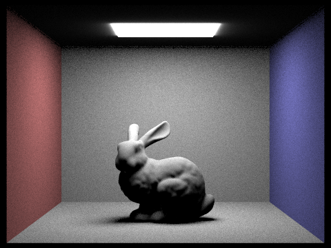 |
| 1 |
|
 |
| 2 |
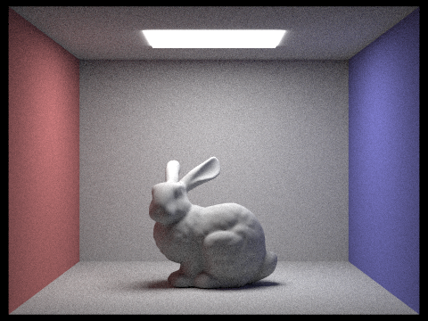 |
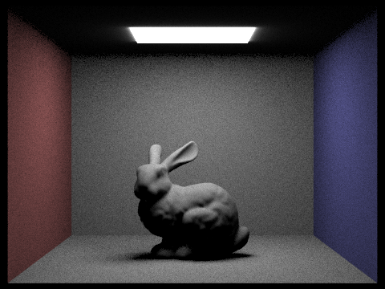 |
| 3 |
|
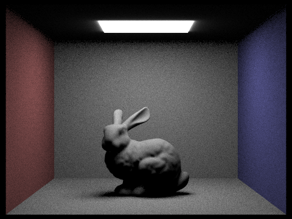 |
| 4 |
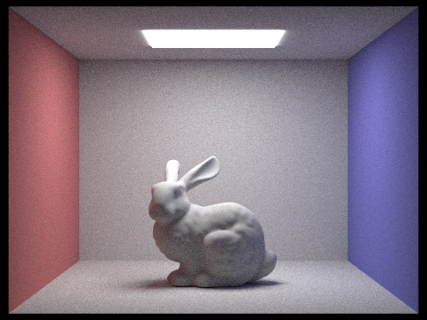 |
|
| 5 |
|
 |
Russian Roulette rendering — CBbunny.dae (1024 spp)
-
With Russian Roulette enabled, rays are probabilistically terminated after a certain
depth, allowing for potentially very long paths (e.g., max depth = 100) without excessive
computation. As the max ray depth increases, the rendered image becomes more accurate, but
the difference becomes negligible after a few bounces since higher-order contributions are
very small.
-
Comparing results:
- Low depths (0–2): Missing indirect lighting — dark images
- Medium depths (3–5): Most lighting effects captured
- High depth (100): Very similar to depth 5, but slightly more refined
- Russian Roulette helps maintain efficiency while still producing unbiased results.
| max_ray_depth | Russian Roulette |
|---|
| 0 | 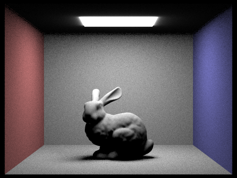 |
| 1 | |
| 2 | |
| 3 | |
| 4 | |
| 100 | |
Sample-per-pixel comparison — CBbunny.dae (4 light rays)
-
Using the CBbunny scene, I rendered images with increasing samples per pixel:
- Low samples (1–4): Very noisy, especially in shadow regions
- Medium samples (8–64): Noise decreases, but still visible
- High samples (1024): Very smooth image with minimal noise
-
This demonstrates that increasing samples per pixel reduces variance in the Monte Carlo
estimator, producing cleaner and more stable images. However, higher sample counts
significantly increase rendering time, showing the tradeoff between quality and
performance.
| SPP | Image |
|---|
| 1 | 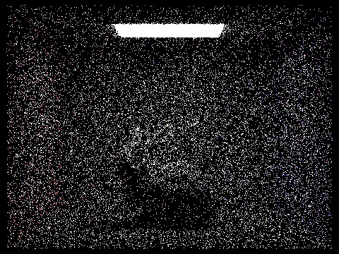 |
| 2 | 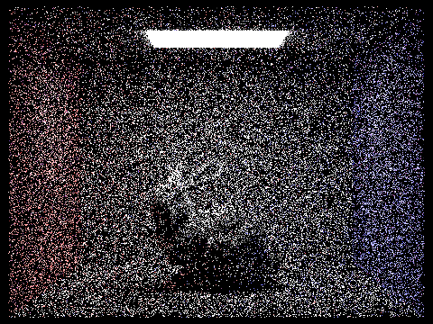 |
| 4 | 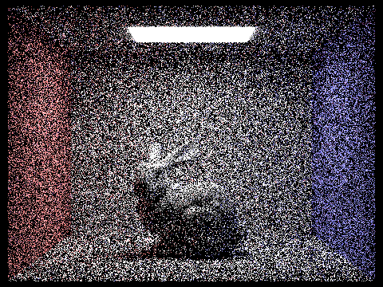 |
| 8 | 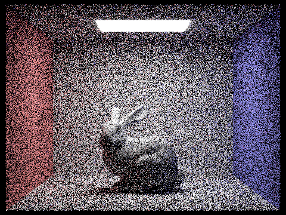 |
| 16 | 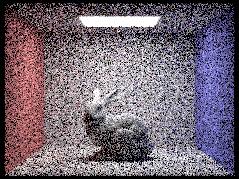 |
| 64 | 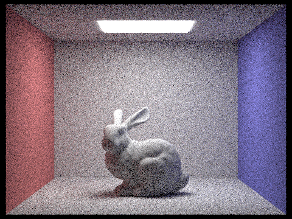 |
| 1024 | 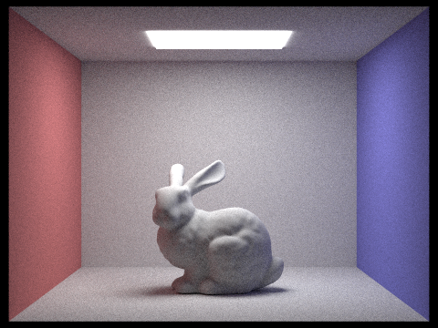 |
PART 5 — 15 pts
Adaptive Sampling
Explain adaptive sampling and walk through your implementation.
Adaptive sampling is a method that improves rendering efficiency by adjusting how many
samples each pixel receives based on how quickly it converges. Instead of using a fixed
number of samples for every pixel, the renderer takes more samples in noisy or complex
areas and fewer samples in smooth areas. In my implementation, I modified the
raytrace_pixel function to keep track of the running sum of illuminance
values and the sum of squared illuminance values for each pixel. For each sample, I
compute the radiance using est_radiance_global_illumination, convert it to a
scalar using illum(), and update these sums. After every
samplesPerBatch samples, I compute the mean and variance of the samples, and
then estimate a confidence interval using the standard deviation. If this confidence
interval is small relative to the mean, meaning the pixel has likely converged, I stop
sampling early. Otherwise, I continue sampling until reaching the maximum number of
samples. This allows the renderer to focus computational effort on areas like edges,
shadows, and detailed geometry while avoiding unnecessary work on flat or uniform regions.
Adaptive sampling results (2048 spp max, 1 light sample, max ray depth 5)
I rendered two scenes, CBbunny.dae and dragon.dae, using adaptive sampling. In both scenes,
the final rendered images appear smooth and largely noise-free. The sampling rate images
clearly show how samples are distributed across the scene. In the CBbunny scene, more
samples are concentrated around the bunny's silhouette, the shadow underneath it, and areas
where lighting changes rapidly, while the flat walls and background receive fewer samples.
In the dragon scene, the sampling rate is higher around the detailed geometry and edges of
the model, while smoother regions converge faster and require fewer samples. These results
demonstrate that adaptive sampling effectively allocates more computation to difficult
regions and less to simpler ones.
| Rendered image | Sampling-rate image |
|---|
|
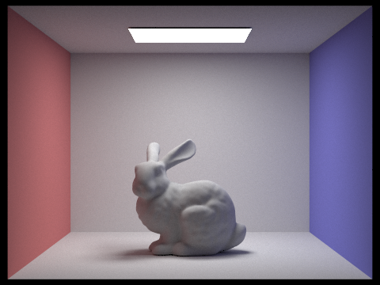
CBbunny — rendered
|
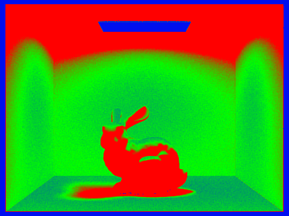
CBbunny — sampling rate
|
|
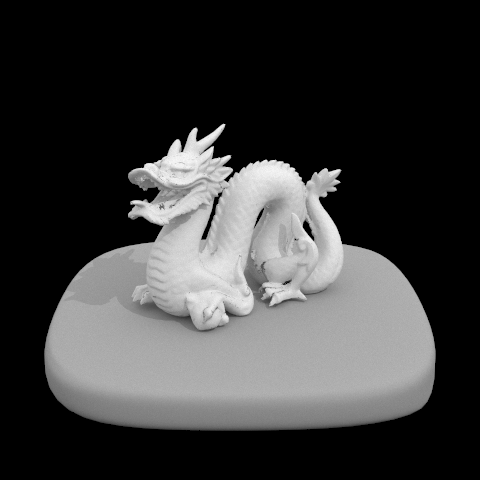
dragon — rendered
|
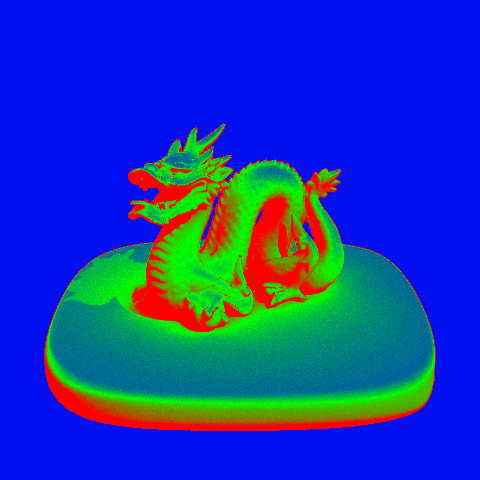
dragon — sampling rate
|
Acknowledgements: ChatGPT, OpenAI, chat.openai.com. Used for sentence
restructuring, wording refinement, and coding assistance in terms of understanding C++
syntax, concepts, and debugging.